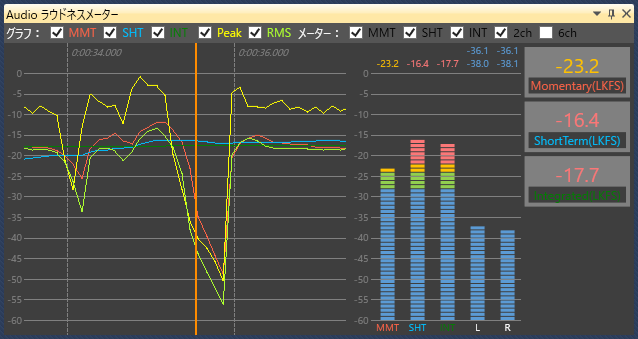

お使いのブラウザは JavaScript が使用できないため、本ドキュメントの一部機能が無効になっています。
JavaScript が無効の環境では目次を使用することができません。JavaScriptの実行が許可された状態で閲覧してください。
NintendoSDK 0.16.0 における NintendoWare オーディオ開発環境の変更点を紹介します。
現在、新機能の有用性を評価中です。
予告なく破壊的な仕様変更が入る可能性がありますので、ご注意ください。
詳しくは「評価中の機能について」を参照してください。
アプリケーションから受信した波形データの平均ラウドネス値を計算し、パネルで表示できるようになりました。
詳しい操作方法は、Spy/Spy.exe/Audio ラウドネスメーターパネル を参照ください。
